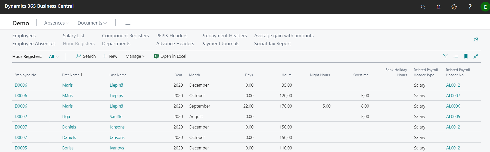

Working Time Accounting
For the calculation of the salary, the number of hours worked is taken into account, which is calculated on the basis of the type of calendar attached to the employee in the Position card, registered absences in the Employee Absences and hours registered in the Hour Registers.
When recruiting a new employee and filling in the Calendar code field if the Position card, the employee will be assigned the planned number of hours according to the settings of the assigned calendar code.
Hour Registers
If the hours actually worked by the employee differ from the planned hours, then by entering a new entry in the Hour Registers and indicating the employee number, you can enter the days and hours the employee has worked actually in the particular month. For aggregated and shift work, the system has a control that does not allow entering/ importing more than 24 hours a day.

The number of hours can be corrected until the salary is calculated (salary calculation transferred to payment journal or salary list is posted).
Tip
If it is necessary to correct the number of hours worked after the salary has been paid or booked, the reversal entry must be made in the same month as the error.
Working Time Accounting (schedule)
At the end of the month, you can print a timesheet using a report Schedule Print Calendar. You can print a timesheet template, which can be adjusted as needed by sending it to Word or Excel.
The table shows the planned working hours according to the Calendar attached to each employee.
By enabling the Accounting button in the report printout window, the schedule printout will include the registered absences in the requested period for each employee, and the number of planned working days/ hours will be reduced accordingly.
Tip
The hours entered in the Hour registers do not appear in the schedule printout. To obtain data on actual working hours, it is necessary to import the report into Excel or Word environment and prepare a printout with the actual distribution of hours by days.